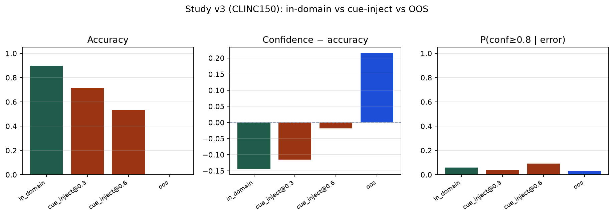
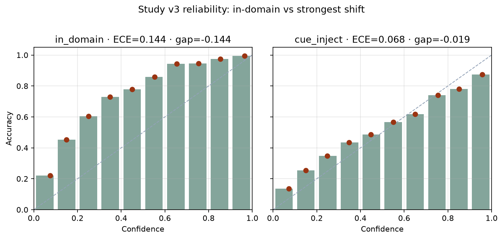

Study v3 complete · mixed / null vs. synthetic overconfidence
Real data — CLINC150
Same question as the synthetic passes, on public CLINC150 (CC BY 4.0, DeepPavlov Hugging Face release). Cue injection from study v2 is rerun on real in-domain utterances. The built-in out-of-scope (OOS) split is a second condition — genuine shift, no injection.
Setup
| Piece | Choice |
|---|---|
| Data | DeepPavlov/clinc150 · fingerprint 53c91a8fb52c3fe7 |
| Train | 15,000 in-domain (150 classes). 200 OOS train rows held out of fitting. |
| Test | 4,500 in-domain · 1,000 OOS |
| Model | Same class as pilot/v2: CountVectorizer 1–2 grams + LogisticRegression, seed 42 |
| OOS scoring | No OOS class in the model. Every OOS example is an error. Question is the confidence of those errors. |
| MSP AUROC (ID vs OOS) | 0.921 — computed in study v4 on this same BoW model |
python research/code/study_real_data_clinc150.py
Headline
On real CLINC150 text, neither cue injection nor OOS reproduced study v2’s overconfidence. Cue injection still hurts accuracy, but confidence falls with it (gap stays negative). OOS errors are mostly low-confidence (mean conf 0.215; only 2.8% of OOS errors have conf ≥ 0.8). Max-softmax still separates in-domain from OOS (MSP AUROC 0.921). That is an OOD-detection result, not v2-style overconfidence. The encoder column is in study v4.

| Condition | n | Acc | Mean conf | ECE | Conf − Acc | P(conf≥0.8|err) |
|---|---|---|---|---|---|---|
| in-domain | 4500 | 0.898 | 0.754 | 0.144 | −0.144 | 0.059 |
| cue_inject @ 0.3 | 4500 | 0.715 | 0.600 | 0.115 | −0.115 | 0.039 |
| cue_inject @ 0.6 | 4500 | 0.535 | 0.516 | 0.068 | −0.019 | 0.091 |
| OOS (all errors by construction) | 1000 | 0.000 | 0.215 | 0.215 | +0.215* | 0.028 |
*OOS gap equals mean confidence because accuracy is defined as 0. That is not the v2 overconfidence pattern (high confidence while looking right). Mean confidence 0.215 is the opposite: the model is mostly unsure.

Vs. study v2 (why they diverge)
Synthetic v2 cue_inject@0.6: conf−acc +0.20, P(high-conf|error) 0.43. Real v3 cue_inject@0.6: conf−acc −0.019, P(high-conf|error) 0.091.
- v2 templates were short and lexically brittle — rival keywords could dominate the bag-of-words features.
- CLINC150 utterances are real, longer, and more redundant, so one or two injected cues rarely capture the softmax.
- In-domain v3 is already underconfident (gap −0.14). The starting calibration is not the near-perfect synthetic clean set.
- OOS here is a true unseen-intent condition, not a keyword swap. The linear model mostly spreads probability instead of locking onto a wrong class.
Operational probe
AUC 0.608 predicting large |confidence − correctness| from length, OOV rate vs train vocab, regime, and cue level — confidence excluded. Weaker than v2’s 0.72. In-sample, not a holdout claim.
Limits
- Same linear bag-of-words family as prior passes — a neural encoder is the study v4 column.
- Not ASR audio; text benchmark only.
- OOS accuracy is zero by scoring choice (no OOS class). Interpret confidence, not the dummy accuracy.
Investigation hub · Reports · Study v4 · Study v2 · Pilot